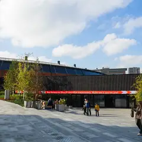

Игровая комната · ЦАО
Pixel Quest
Комната со световым полом: прыгаете по клеткам, соревнуетесь или проходите уровни вместе. До 6 человек, 45 минут игры — 8000 ₽ на всех. Весело и не страшно.
- ₽₽ · 1 500–3 000 ₽ на человека
- Новое в каталоге
- в 1 плане
Позвать сюда: Pixel QuestОткрыть в каталоге: Pixel QuestМаршрут до места: Pixel Quest
Адрес и детали
- Адрес
- Новая Басманная ул., 28, стр. 2 (цокольный этаж)
Открыть на Яндекс Картах (в новой вкладке) - Метро
- м. Бауманская
- Округ
- Центр (ЦАО)
- Цена
- 1 500–3 000 ₽ на человека
- Часы работы
- пн–вс 10:00–22:00 · проверили в октябре 2026
- Телефон
- +7 (495) 308-44-63
- Проверено
- работает — проверили в октябре 2026
Планы с этим местом 1
- Pixel Quest · Игровая комната · м. Бауманская
- 8 минут пешкомТри вокзала. Депо · Фудмолл
В Pixel Quest прыгаете по светящимся клеткам и проходите уровни вместе — весело и совсем не страшно, — а потом фудмолл «Три вокзала. Депо» в бывшем троллейбусном парке.
Открыть план: Световой пол и фудмолл в депоПозвать сюда: Световой пол и фудмолл в депо
Фото: Svetlov Artem, CC BY 4.0 · Wikimedia Commons
Похожие рядом
Что ещё рядом
- Усадьба Прове-КалишУсадьба и концертный зал · ≈ 4 минуты пешком
 Усадьба Муравьёвых-АпостоловМузей-усадьба · ≈ 4 минуты пешком
Усадьба Муравьёвых-АпостоловМузей-усадьба · ≈ 4 минуты пешком- Urban WineryГородская винодельня · ≈ 4 минуты пешком

Музей транспорта МосквыМузей · ≈ 6 минут пешком Три вокзала. ДепоФудмолл · ≈ 8 минут пешком
Три вокзала. ДепоФудмолл · ≈ 8 минут пешком Сад им. БауманаСад · ≈ 8 минут пешком
Сад им. БауманаСад · ≈ 8 минут пешком
Как позвать
- Выбери план, место или событие — в карточке адрес, цены и маршрут в Яндекс Картах.
- Нажми «Позвать сюда» — соберётся приглашение-игра для свидания или голосование для компании.
- Отправь ссылку в любой мессенджер: тебе ответят, а компания отметит, куда и когда может. Бесплатно и без регистрации.